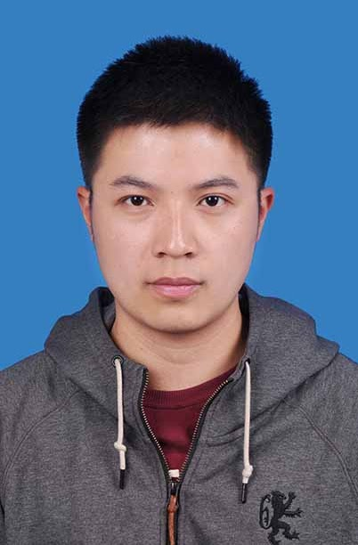
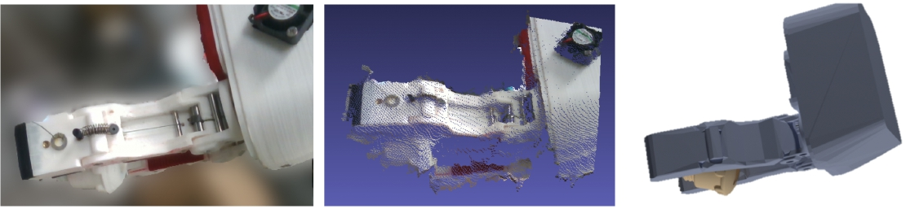
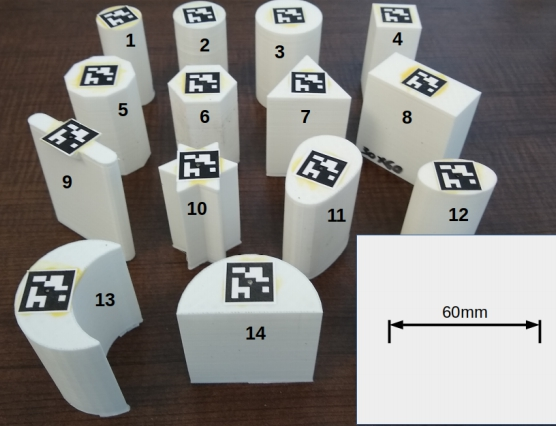
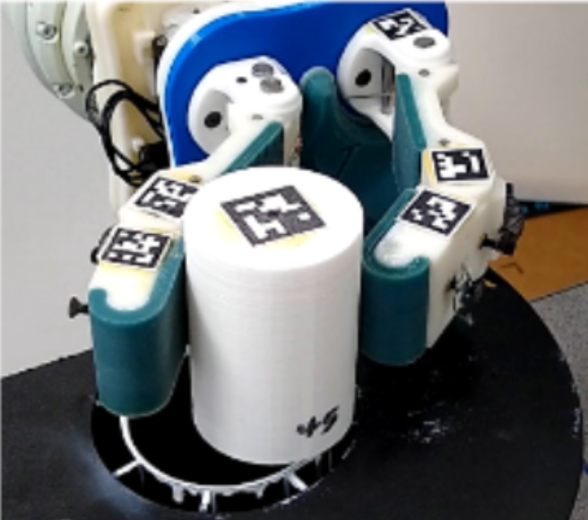
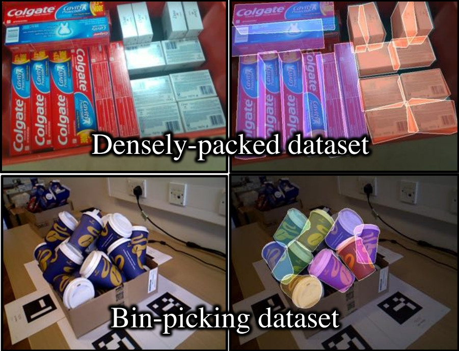
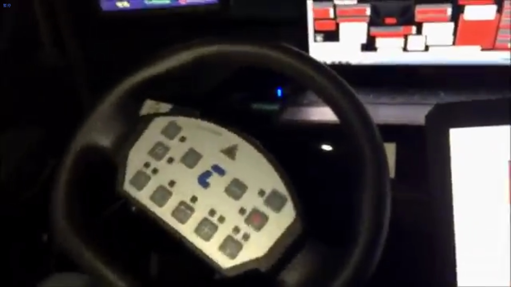

|  |
Bowen WenI am a PhD student in CS at Rutgers University, working with Prof. Kostas Bekris. My research areas include robotic perception, computer vision. Specifically, I work on 3D visual perception and learning to facilitate robotic manipulations. During my PhD, I've spent wonderful summers with Facebook Reality Labs, Amazon Lab 126 and SenseTime working as a research intern. Before PhD, I obtained MS degree in ECE from Ohio State University in 2018 and BS degree in Energy and Automation from Xi'an Jiaotong University in 2016.Email: wenbowenxjtu [at] gmail [dot] com Research Interests: Robotics, Computer Vision, Artificial Intelligence |
|
|
|
|

|
Bowen Wen, Chaitanya Mitash, Baozhang Ren, Kostas E.
Bekris,"se(3)-TrackNet: Data-driven 6D Pose Tracking by Calibrating Image Residuals in Synthetic Domains",
IROS 2020
[pdf] [code] |
 |
Mitash, Chaitanya, Shome, Rahul, Wen, Bowen, Boularias,
Abdeslam, Bekris,
Kostas E. "Task-driven Perception and Manipulation for Constrained Placement with No Shape Priors", RA-L and
IROS 2020
[pdf] |
|  | Bowen Wen, Chaitanya Mitash, Sruthi Soorian, Andrew
Kimmel, Avishai
Sintov,
Kostas E. Bekris, "Robust, Occlusion-aware Pose Estimation for Objects Grasped by Adaptive Hands", IEEE
International Conference on Robotics and Automation (ICRA) 2020
[pdf] [code] |
|  | Avishai Sintov, Andrew Kimmel, Bowen Wen, Abdeslam
Boularias, Kostas
Bekris,
"Tools for Data-driven Modeling of Within-Hand Manipulation with Underactuated Adaptive Hands", L4DC
(Learning for Dynamics & Control) 2020
[pdf] [code] |
|  | Andrew Kimmel, Avishai Sintov, Juntao Tan, Bowen Wen,
Abdeslam Boularias,
Kostas Bekris, "Belief-Space Planning Using Learned Models With Application To Underactuated Hands",
International Symposium on Robotics Research (ISRR) 2019
[pdf] |
|  | Chaitanya Mitash, Bowen Wen, Kostas Bekris, Abdeslam
Boularias,
"Scene-level
Pose Estimation for Multiple Instances of Densely Packed Objects", Conference on Robot Learning (CoRL)
2019
[pdf] [code] |
|  | Wen, Bowen, Sukru Yaren Gelbal, Bilin Aksun Guvenc, and
Levent Guvenc. "Localization and Perception for Control and Decision-Making of a Low-Speed Autonomous Shuttle
in a Campus Pilot Deployment." SAE International Journal of Connected and Automated Vehicles 1, no.
12-01-02-0003 (2018): 53-66.
[pdf] [code] |
©Bowen Wen. All rights reserved